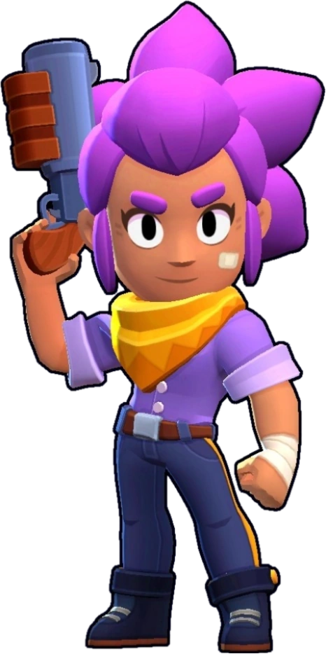

¿Quién es Shelly?
Shelly es la tiradora perfecta: donde pone el ojo, pone la bala. No entiende por qué Colt es quien siempre se lleva las miradas...
Shelly es una Brawler Común que se desbloquea al comenzar el juego. Tiene una salud moderada y una eficacia en cuanto a daño. Su escopeta causa más daño cuanto más cerca está de su objetivo, lo que la hace excelente para el combate de corto a medio alcance. Sus ataques también son extendidos. Su Súper puede derribar varios obstáculos y también derribará y aturdirá a los Brawlers enemigos.
|  |
NIVEL DE FUERZA 11 |
Sus gadgets
 |
PASO AL FRENTE: Shelly arremete hacia adelante ¡con una velocidad envidiable! |
 |
TIRO AL PLATO:Por los siguientes 5 segundos los ataques de Shelly se centran en una zona más reducida y aumenta su alcance. |
Sus habilidades estelares
 |
CHOQUE MATE: ¡Las superbalas de Shelly ralentizan a los enemigos durante 2 segundos! |
 |
PRIMEROS AUXILIOS: Cuando la salud de Shelly está por debajo del 40%, recupera 2200 puntos de salud automáticamente. La habilidad tarda 15 segundos en recargarse. |
Su hipercarga
A DOS CAÑONES: El radio de acción de las Superbalas es un 33% mayor. |
 Braian Arancibia
Braian Arancibia Aya El Baarar
Aya El Baarar